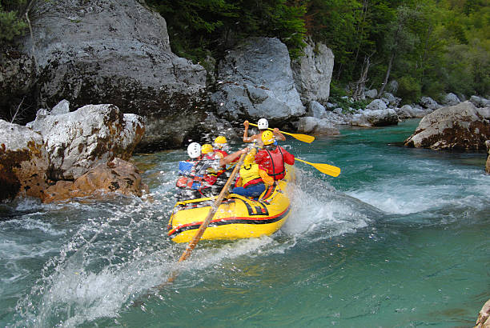

History
he origins of our rafting company trace back to the late 1970s when a group of outdoor enthusiasts, captivated by the thrill of whitewater rafting, decided to share their passion with others. Starting humbly with a few rafts and a love for adventure, they began guiding small groups down local rivers. As the company gained traction, word spread about the exhilarating experiences offered by these intrepid guides. Throughout the 1980s, the company expanded its offerings, exploring new rivers and perfecting their craft. They established a reputation for safety, professionalism, and environmental stewardship, earning the trust and loyalty of adventurers seeking unforgettable journeys through breathtaking landscapes. By the 1990s, our rafting company had become a prominent player in the outdoor recreation industry. With a dedicated team of guides and staff, they diversified their services to include multi-day expeditions, family-friendly trips, and team-building adventures. Their commitment to providing exceptional customer experiences led to steady growth and recognition within the industry.
In the 2000s, the company continued to evolve, embracing technological advancements and sustainable practices while staying true to its roots. They invested in state-of-the-art equipment, expanded their reach through online marketing, and collaborated with local communities to promote responsible tourism. Today, our rafting company stands as a testament to the enduring spirit of adventure and exploration. With decades of experience and a passion for the outdoors, we remain committed to providing unforgettable rafting experiences while preserving the natural beauty of the rivers we cherish. As we look to the future, we are excited to continue sharing the thrill of whitewater rafting with adventurers from around the world, ensuring that the legacy of our company lives on for generations to come.